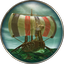
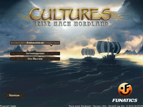
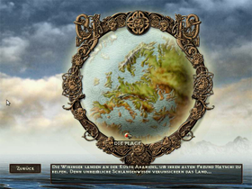
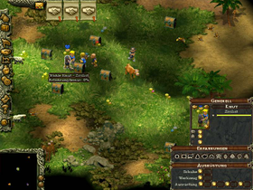

Reise nach Nordland
Dieser Artikel wurde für die folgenden Ubuntu-Versionen getestet:
Ubuntu 16.04 Xenial Xerus
Zum Verständnis dieses Artikels sind folgende Seiten hilfreich:
Desura bedienen, optional
Programme zum Menü hinzufügen, optional
Einen Editor öffnen, optional

Reise nach Nordland  - Dies ist die Geschichte des Wikingers Bjarni, den seine Abenteuer in den fernen Orient geführt haben. Dort wird die er nun in ein hinterhältige Intrige verwickelt, deren Ausgang über das Schicksal der Welt entscheidet...
- Dies ist die Geschichte des Wikingers Bjarni, den seine Abenteuer in den fernen Orient geführt haben. Dort wird die er nun in ein hinterhältige Intrige verwickelt, deren Ausgang über das Schicksal der Welt entscheidet...
Die Reise nach Nordland ist ein Abenteuerstrategiespiel aus der Cultures-Reihe. Der Wikinger-Stamm muss diverse Abenteuer bestehen. Der geschickte Umgang mit Rohstoffen, Ausbau von Wirtschaft und Militär entscheidet über dessen Schicksal. In der Linuxversion gibt es keinen Mehrspieler-Modus. Es können Kampagnen und Einzelspieler-Karten gespielt werden.
|  |  |  |
| Menü | Kampagne | Spielszene |
Installation¶
CD-Version¶
Der aktuallisierten Installer von bitbucket.org 
 herunterladen und ausführbar [1] machen.
herunterladen und ausführbar [1] machen.
Das Installationsmedium einlegen und anschließend die Installation des Spiels einleiten [2]:
./cultures.northland_1.04c-multilingual.cdrom_x86-20130212.mojo.run
Der graphische Installer startet. Nach der Angabe des Installationspfades, z.B. ~/Spiele/Northland, kann die Spielsprache ausgewählt werden. Zur Auswahl stehen Deutsch und Englisch .
Über "Spiele -> Northland" im Anwendungsmenü kann das Spiel gestartet werden.
Desura¶
Nachdem man das Spiel über die Internetseite oder den Client erworben hat, kann das Spiel installiert [3] und über diesen gestartet werden.
Handbuch¶
Im Ordner Manual auf der CD oder im Installationsverzeichnis ist das Handbuch als PDF zu finden.
Konfiguration¶
Fenster-Modus¶
Um das Spiel im Fenster-Modus zu starten - den Menüeintrag [4]
~/Spiele/Northland/Northland -w
| Startparameter | |
| Parameter | Funktion |
-w | Fenstermodus |
-s | Soundausgabe im Spiel deaktiviert. Die Musik wird weiterhin abgespielt. |
config.xml¶
In der Konfigurationsdatei sind nur wenige Einstellungen möglich. Mit einem Editor [5] die Datei config.xml im Homeverzeichnis unter ~/.northland anpassen:
<?xml version="1.0" encoding="UTF-8" ?> <DexterXML> <ScreenMode>FullScreen</ScreenMode> <ScreenWidth>800</ScreenWidth> <ScreenHeight>600</ScreenHeight> </DexterXML>
| config.xml | |
| Option | Beschreibung |
<ScreenMode>Windowed</ScreenMode> | Fenster-Modus |
<ScreenMode>FullScreen</ScreenMode> | Vollbild-Modus |
<ScreenWidth>1680</ScreenWidth> | Bildauflösung |
<ScreenHeight>1050</ScreenHeight> | |
Demo¶
Eine Demoversion kann von Bitbucket oder holarse-linuxgaming.de heruntergeladen und wie die Vollversion installiert werden.
Deinstallation¶
Um das Spiel zu deinstallieren das Skript uninstall-Nothland.sh im Installationsverzeichnis aufrufen [1]. Anschließend den Ordner ~/.northland im Homeverzeichnis löschen.
Tastenkürzel¶
| Tastenkürzel | |
| Taste(n) | Funktion |
| Alt + ⏎ | Vollbild- / Fernstermodus |
| F1 | Hilfemenü |
| F2 bis F4 | Optionsfenster - Einstellungen an Grafik, Musik vornehmen. Spielstand und Spiel beenden. |

Infobox¶
| Geschichten aus der Cultures-Welt - Reise nach Nordland | |
| Originaltitel: | Northland |
| Genre: | Aufbaustrategie |
| Sprache: | |
| Veröffentlichung: | 2002 |
| Publisher: | Runesoft GmbH |
| Systemvoraussetzungen: | Pentium III 700 MHz - mind. 256 MB RAM - mind. 280 MB Festplattenspeicher |
| Medien: | CD (1) |
| Strichcode / EAN / GTIN: | 4041098005016 |
| Läuft mit: | nativ |
- Erstellt mit Inyoka
-
 2004 – 2017 ubuntuusers.de • Einige Rechte vorbehalten
2004 – 2017 ubuntuusers.de • Einige Rechte vorbehalten
Lizenz • Kontakt • Datenschutz • Impressum • Serverstatus -
Serverhousing gespendet von